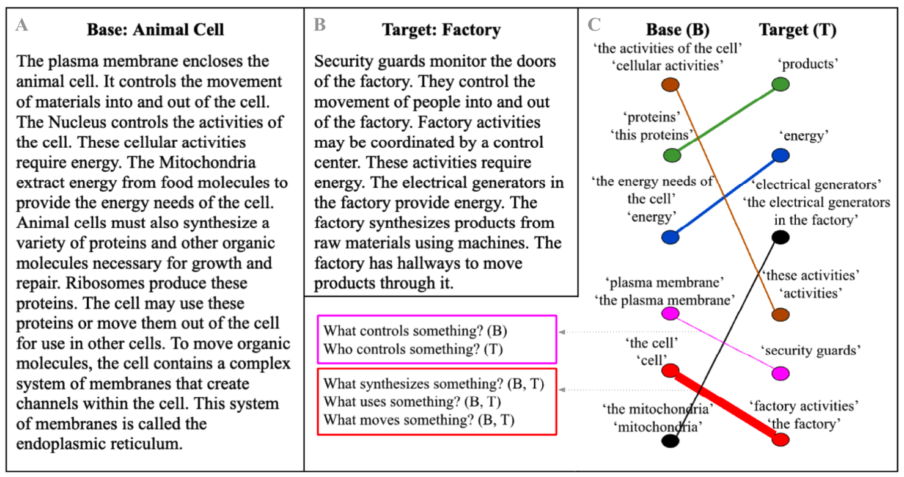

A+B: Example input – two analogous texts, describing the animal cell (base) and factory (target).
A+B: Example input – two analogous texts, describing the animal cell (base) and factory (target).
C: Our algorithm’s output. The nodes are entities (clusters of text spans). Edge width represents similarity between entities in terms of the roles they play in the text. For example, the boxes on the left illustrate the similar roles associated with the red and the pink entities. All the mappings our algorithm found are correct, but two are missing (ribosomes/machines and endoplasmic reticulum/hallways). Showing the mapping along with its justification (the similar roles) renders our output easy to interpret.

Second image description.

Third image description.